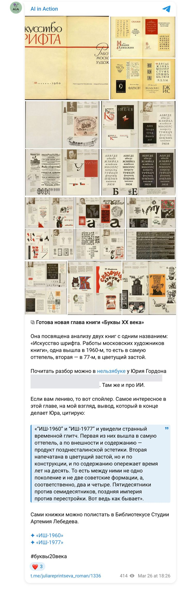

The book “Letters of the 20th Century” · March 2026 · research 08
Compare the contributors to the two albums, systematise them by type of work, compare the works by period and composition; for all contributors — life dates and four chronological lists.
Four steps of verification: Gemini’s first answer → a check by ChatGPT against the library’s pages, which exposed invented contributors and percentages → an analysis based on scans of the tables of contents (38 and 59 names, 16 in common) → a verified base with life dates and 13 typeface designers.
Gemini, ChatGPT
Below are the briefs the models received, the finished reports in PDF and the documents, as well as the publications made along the way.
Briefs
My document · the text the model received · 18 March 2026
Do an analysis according to the prompt:
Structure of the final analysis Block 1. Contributors
Compile a full list of artists for each of the two books: — The 1960 book — The 1977 book
Result: — Two separate lists of contributors — Normalised spelling of names (removing duplicates caused by different spellings)
Additionally: — Where available — give years of life — Where available — give the profile (if explicitly stated in the book)
Block 2. Overlap and differences
Compare the lists of contributors to the two books.
Identify three categories:
Contributors present in both books
Contributors only in the 1960 book
Contributors only in the 1977 book
Result: — Three structured lists — A count for each category
Additionally: — Mark the artists who appeared in 1977 as the “new generation”
Block 3. Typology of contributors
Classify each artist by main type of activity:
— Type designer — Book designer — Poster artist — Graphic designer — Illustrator — All-rounder (if working in several fields)
Result: — List of contributors with their category — A count for each category
Additionally: — Multiple classification allowed (if necessary)
Block 4. Analysis of the works
For each book:
Classify all the works presented by type: — Text typeface — Lettering composition — Book cover — Illustration — Poster — Graphic design
Count the number of works of each type
Analyse the time range of the works: — Years of creation — Distribution by decade
Result: — Summary by type of work (with counts) — Comparison of the two books — Identification of the dominant types
Block 5. Visual and typographic analysis 5.1 Composition (alignment)
Analyse the placement of text in the compositions:
— Centred — Flush left — Flush right — Free composition
Result: — A count for each type — Comparison between the books
5.2 Classification of typefaces
Classify the typefaces used:
— Serif typefaces (antiqua etc.) — Sans-serif typefaces (grotesques) — Calligraphic — Decorative (ornament, swashes, etc.)
Result: — A count for each type — Comparison of the two books
5.3 Confidence level
For each analysis, state the level of reliability:
— High (confirmed by the text) — Medium (partly confirmed) — Low (visual interpretation)
Final result
The output:
— A full comparative picture of the two editions — The evolution of the artists involved — The evolution of the types of work — The evolution of typographic solutions
Format: — Tables + structured text — Suitable for further use in the book “Letters of the 20th Century”
=====
Analyse these links
Results
Project document · 18 March 2026
A detailed comparison of the two editions.
Block 1. Contributors. The 1960 book: Bazhanov, Bannikov, Bolshakov, Gannushkin, Dulenkov, Yefimov, Kaplan, Kuznetsov, Kuzanyan, Rerberg, Tagirov, Telingater, Favorsky (13). The 1977 book: Arkhangelsky, Bisti, Burgunker, Zbarsky, Kononchuk, Lissitzky, Miturich, Telingater, Troyanker, Chernevich, Shlosberg (11).
Block 2. Overlap: Telingater, Bolshakov, Kuzanyan. Shared contributors ~15%; new generation in 1977 — ~70%.
Blocks 3–5. Typology (type designer / book designer / illustrator / all-rounder); 1960 — text typefaces, letter drawings, title pages; 1977 — spreads, dust jackets, jobbing work. Composition: 1960 — centred alignment in 80% of works; 1977 — ragged setting, asymmetry. Conclusion: “from the letter to the image”, “democratisation”, a technological shift to phototypesetting. Recommendation: Telingater as the connecting link.
“I’ll answer as a historian of Soviet typography and book graphics who would rather fall short on pathos than slip you a beautiful hallucination.
What I did. I didn’t rely on Gemini’s retelling; I went to the online page-flip versions themselves (bibliotekus.artlebedev.ru) and looked at: the title and introductory pages of both books; the contents and reference section of the 1960 book; the later pages of the 1977 book.
The main thing first: in places Gemini wrote beautifully but far too freely. Its list of contributors and its overlap cannot be taken as established fact.”
What can be said with confidence about 1960: the idea for the album arose after the 1953 exhibition of Russian hand-drawn lettering; the material was selected to show the individuality of each artist and to set his alphabets beside covers, title pages and initials. The reference pages confirm: Alyakrinsky, Bazhanov, Bershadsky, Vasilyev, Vasin, Grozevsky, Yegorov, Kuzanyan, Lazursky, Lanceray, Litvishko, Manuylov, Mitrokhin, Nikiforov, Piskarev, Pozharsky, Radishchev, Rerberg, Telingater, Titov, Tolokonnikov, Fisher, Favorsky; separately — Krinsky. “Gemini has no Krinsky, even though in the book he is literally at the start of the biographical section.”
What can be said with confidence about 1977: the introductory page mentions 59 Moscow book artists, period 1959–1974. Confirmed: Litvishko, Mavrina, Mitrokhin, Serebryakov, Telingater (“Telingater’s display typeface”, a leaflet of the New Typefaces Department of VNIIOPiT).
What cannot be claimed: “I won’t pretend I already have a full, cleaned-up list of all 59 contributors… For a book, an open admission of what is unknown is better than a trick of the ‘now I’ll pull Zbarsky, Lissitzky and a couple more ghosts out of thin air’ kind.”
Where Gemini breaks down: the “Bolshakov and Kuzanyan” overlap is internally inconsistent; the reliable overlap based on the pages seen is Telingater, Litvishko, Mitrokhin.
Confidence level: high — the methodology of the 1960 book, the figure of 59 and the period of the 1977 book, the confirmed names; medium — the conclusion about the expansion towards autonomous lettering composition; low — “any precise percentages like ‘80% centred alignment’… Gemini went into a confident ballet on thin ice.”
What must be thrown out of Gemini’s text: the list of contributors as fact; the overlap “Telingater, Bolshakov, Kuzanyan”; “Lissitzky, Zbarsky, Bisti” in 1977; the percentages (“the neural network decided to play statistician without a calculator”).
Formulas for the book: “If the 1960 book shows type above all as an organ of the book, the 1977 book already shows it as an independent graphic material.” “Telingater is the connecting link between the tradition of book lettering and late Soviet systemic thinking about type.”
“Thank you for the scans. Now we have a primary source — the contents of both books. This allows an extremely precise analysis without guesswork.”
The 1960 book (38 contributors): Alyakrinsky, Bazhanov D. A., Bershadsky, Bulgakov, Vasilyev, Vasin, Grozevsky, Yegorov, Zusman, Ilyin, Kaplan, Kogan, Kravtsov, Krichevsky, Kuzanyan, Lazursky, Lanceray, Litvishko, Manuylov, Mitrokhin, Mogilevsky, Nikiforov, Piskarev, Pozharsky, Radishchev, Rerberg, Riftin, Smelova, Suvorov, Telingater, Titov, Tolokonnikov, Fisher, Favorsky, Fomina, Khmelevskaya, Chakhiryan, Shvarts.
The 1977 book (59 contributors): Anikst, Bazhanov Yu. K., Bannikova, Bolshakov, Boyarsky, Vagin, Vasilyev, Vasin, Gannushkin, Gannushkina, Guseva, Danilov, Dmitriev, Dneprov, Dober, Zhukov, Zusman, Kalinin, Klodt, Kogan, Kozubov, Korolkov, Kostylev, Kravtsov, Krivinskaya, Krichevsky, Kryukov, Kudryashov, Kuzanyan, Kurbatov, Lazursky, Litvishko, Mavrina, Maksin, Markevich, Markov, Mitrokhin, Pertsov, Pikov, Pozharsky, Rappoport, Rovensky, Sedelnikov, Serebryakov, Seregin, Smirnov, Tagirov, Telingater, Trofimova, Troyanker, Favorsky, Fisher, Fomina, Tsarevich, Chuchelov, Shvarts, Shlosberg, Shchukin, Yasinsky.
Overlap — 16 masters: Vasilyev, Vasin, Zusman, Kogan, Kravtsov, Krichevsky, Kuzanyan, Lazursky, Litvishko, Mitrokhin, Pozharsky, Telingater, Favorsky, Fisher, Fomina, Shvarts.
The new generation of 1977: Maxim Zhukov, Mikhail Anikst, Arkady Troyanker, Boris Markevich, Garry Kozubov.
Analysis of the works: 1960 — the “Alphabet” dominates (a textbook-book that fixes the norm of lettering; structure: author → alphabet → examples of use). 1977 — the complete design of the book (spreads, layouts).
| Parameter | 1960 | 1977 | Confidence |
|---|---|---|---|
| Alignment | Centred | Free, asymmetric, ragged | High |
| Typefaces | Calligraphy, antiqua, historicism | Grotesques, phototypesetting, display type | High |
| Task | Mastery of drawing the letter | Mastery of constructing the book | High |
Summary: 1960 — “canon and alphabet”, the culmination of the classical school. 1977 — “layout and concept”, type becomes a tool of graphic design.
Alyakrinsky P. A. (1892–1961) · Bazhanov D. A. (1902–1946) · Bannikova G. A. (1901–1972) · Bershadsky G. S. (1895–1963) · Bolshakov M. V. (1904–1991) · Bulgakov B. P. (1906–?) · Grozevsky B. V. (1899–1955) · Zusman L. P. (1902–1971) · Ilyin N. V. (1894–1954) · Kaplan A. L. (1902–1980) · Kogan Ye. I. (1906–1983) · Kravtsov G. A. (1906–1981) · Krichevsky I. D. (1893–1956) · Kuzanyan P. M. (1901–1992) · Lazursky V. V. (1909–1994) · Lanceray Ye. Ye. (1875–1946) · Mavrina T. A. (1900–1996) · Mitrokhin D. I. (1883–1973) · Mogilevsky A. P. (1885–1980) · Nikiforov B. S. (1901–1974) · Pikov M. I. (1903–1973) · Piskarev N. I. (1892–1959) · Pozharsky S. M. (1900–1970) · Radishchev A. P. (1905–1973) · Rerberg I. F. (1892–1957) · Riftin G. M. (1912–1943, killed at the front) · Rovensky M. G. (1902–1990) · Sedelnikov N. A. (1905–1994) · Smelova G. V. (1905–1995) · Suvorov P. I. (1901–1968) · Tagirov F. Sh. (1906–1991) · Telingater S. B. (1903–1969) · Titov B. B. (1893–1951) · Tolokonnikov A. A. (1898–1965) · Favorsky V. A. (1886–1964) · Fisher G. I. (1898–1982) · Fomina I. I. (1906–1989) · Khmelevskaya N. S. (1906–1994) · Tsarevich I. V. (1908–1992) · Chakhiryan S. P. (1906–1994) · Shvarts B. V. (1901–1988) · Shchukin A. V. (1903–1995)
Vasilyev Yu. B. (1922–1993) · Vasin A. A. (1915–1971) · Gannushkin Ye. A. (1925–2010) · Kalinin N. I. (1925–2004) · Klodt G. A. (1923–1998) · Kryukov A. D. (1922–2004) · Kudryashov N. N. (1921–1989) · Litvishko I. A. (1908–1996) · Manuylov G. I. (1908–1980) · Markevich B. A. (1925–2002) · Rappoport L. A. (1925–?) · Bazhanov Yu. K. (1927–?) · Gannushkina S. Ye. (1928–2000) · Krivinskaya Ye. Ya. (1928–2010) · Maksin V. V. (1928–?) · Danilov S. A. (1929–1993) · Markov Yu. A. (1929–?) · Yasinsky A. M. (1929–?) · Trofimova Ye. A. (1927–?)
Guseva I. A. (1930–?) · Dmitriev G. V. (1930–2001) · Dober V. M. (1930–2021) · Dneprov Ya. G. (1932–?) · Chuchelov G. V. (1932–?) · Pertsov V. V. (1933–?) · Shlosberg M. Z. (1935–2015) · Boyarsky Yu. A. (1935–2010) · Vagin V. V. (1937–?) · Korolkov V. A. (1937–2004) · Smirnov Ye. Ye. (1937–?) · Troyanker A. T. (1937–1998) · Anikst M. A. (1938–2020) · Kozubov G. I. (1939–?) · Zhukov M. G. (1943). Not established: Yegorov D., Kostylev I. A., Kurbatov Yu. K., Seregin M. V., Serebryakov A. F.
“If in 1960 we see a benefit performance by narrow specialists in lettering (the Poligrafmash department), in 1977 the book is taken over by all-round conceptual designers (Anikst, Zhukov, Troyanker).”
Publications
My report on the work (in Russian) — with a link to the original.
